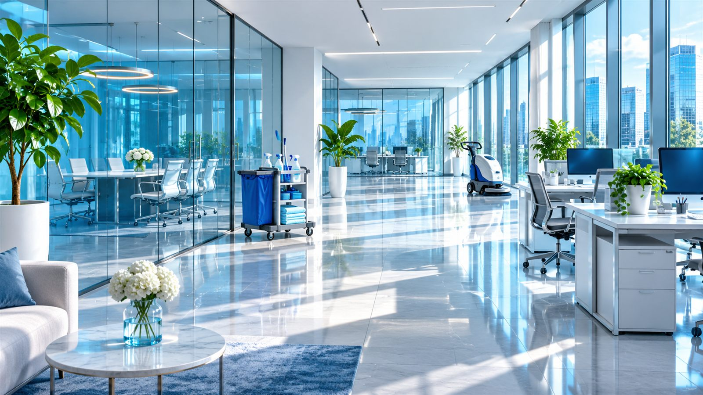
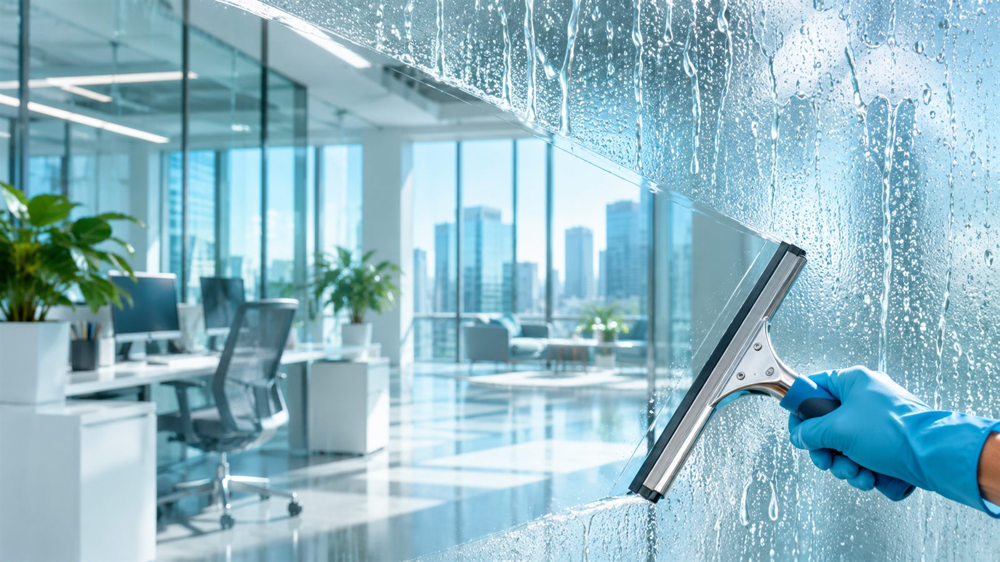
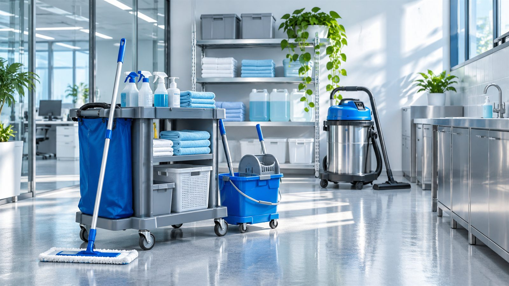

Клининг офисов
Проведите границу очистки.
Уборка до прихода команды.
Рабочий день — без пауз.

Офис работает.
Уборка вписана в график.
Условная рабочая неделяПериодичность согласуется с офис-менеджером. Это пример распределения задач, состав работ закрепляется в договоре.
Приёмка по зонам
Отметьте пункты, которые важны для вашего офиса. Выбор попадёт в демонстрационный бриф.
Режим обслуживания
Пример — концепт для портфолио
Учебная ставка 65 ₽/м² за уборку. Окна, расходные материалы и сложные загрязнения считаются отдельно.

Доступ тоже
часть задания.
- Ключи и пропуска
- Список допущенных сотрудников и порядок передачи.
- Техника и документы
- Какие поверхности доступны, какие зоны закрыты.
- Завершение смены
- Проверка окон, света и порядка закрытия офиса.
Перед тем
как начать
Можно убирать до начала рабочего дня?
Да, в заявке можно указать удобное время. Допуск, ключи и порядок закрытия помещения согласуются отдельно.
Включены ли расходные материалы?
Состав химии, инвентаря и расходников фиксируется в договоре. В учебном расчёте показана только базовая уборка.
Как принимается работа?
Для каждой зоны можно согласовать перечень операций и чек-лист. Замечания отмечаются при приёмке.
Уборка в ритме офиса
Площадь и режим работы помогут подобрать состав уборки, который не мешает команде.
Форма показывает сценарий заявки. Данные не отправляются и не сохраняются.